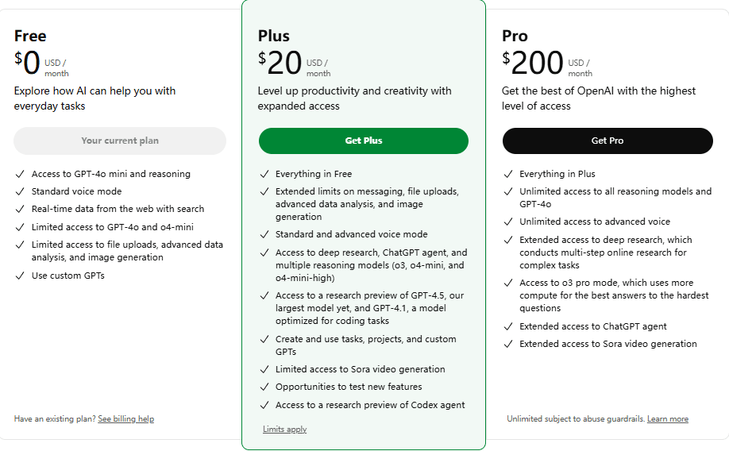
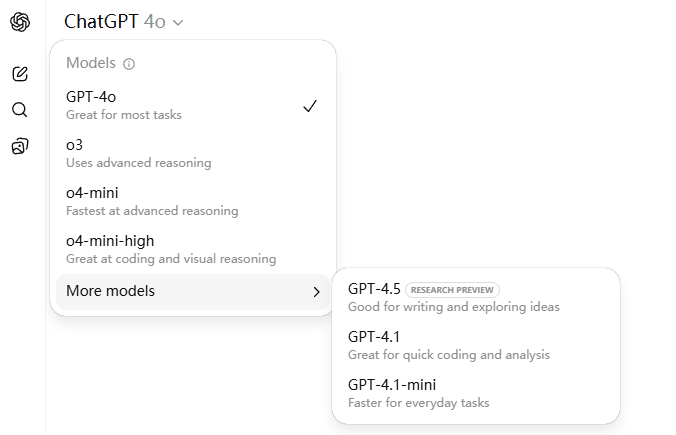
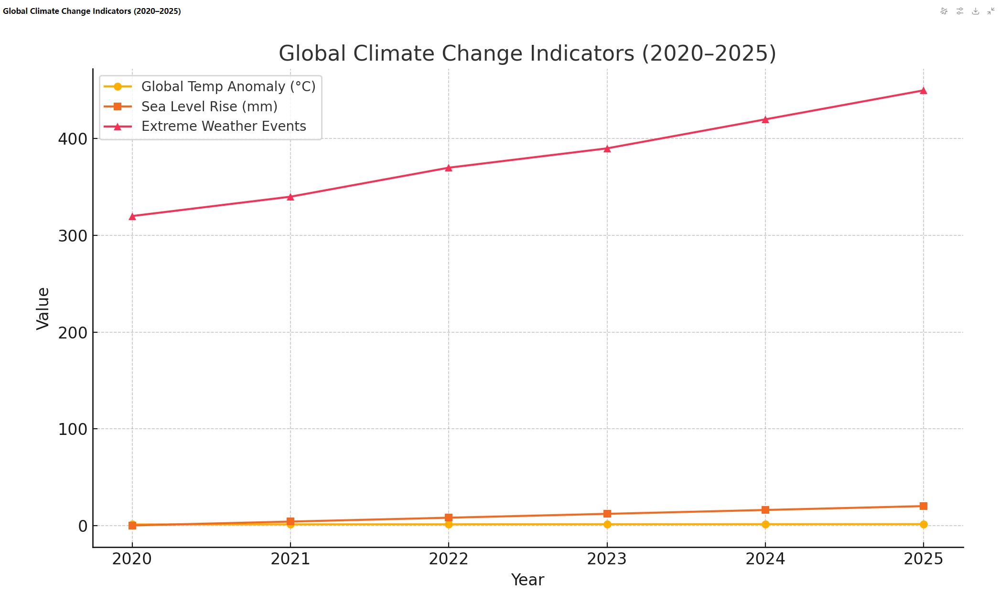
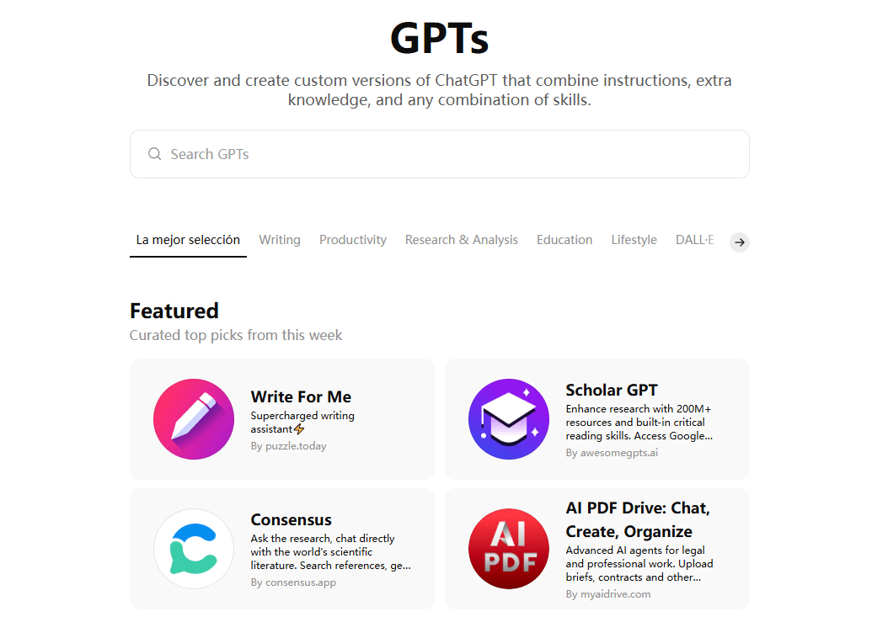
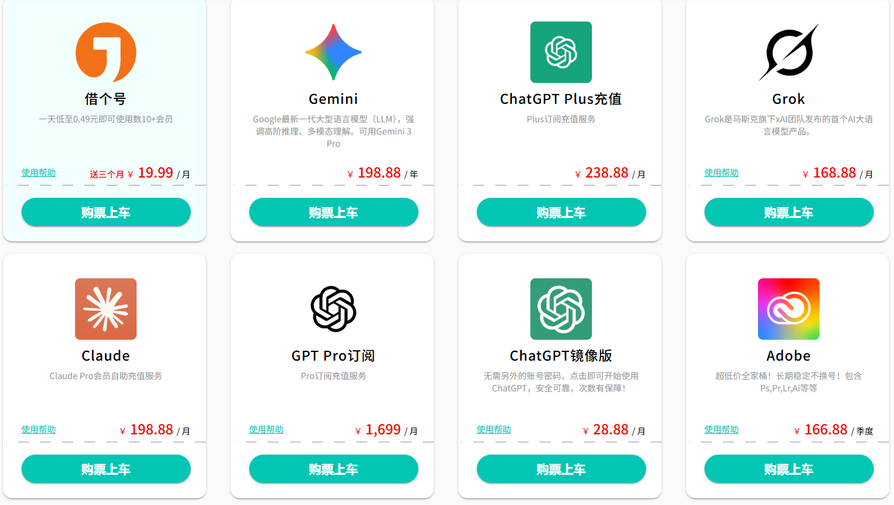

ChatGPT Plus 2025 年评测：值得支付 20 美元吗？

ChatGPT Plus 曾经是访问 GPT-4 的唯一途径。现在，即使是免费用户也可以尝试强大的 4.1 迷你 版。这一变化让很多人感到疑惑：Plus 还值得订阅吗？
作为 Plus 的长期用户，一年前我的回答是："免费版本对大多数人来说已经足够了。"但随着 ChatGPT 的不断升级和重大改进——尤其是GPT-5 即将推出——我的看法悄然开始转变。
当然， ChatGPT Plus 是否值得取决于你的具体需求 。在本文中，我将客观地分析 ChatGPT Plus 的主要优势和局限性，以帮助你决定它是否值得每月 20 美元。
ChatGPT 订阅价格
目前，OpenAI 为个人用户提供三种不同的 ChatGPT 计划，旨在满足各种需求。
ChatGPT Plus 每月收费 20 美元，可让你访问 GPT‑4o 模型、图像生成、文件上传以供分析、网页浏览等核心功能。对于大多数人来说，ChatGPT Plus 可以轻松满足日常工作和学习的需求。
ChatGPT Pro 提供更强大的体验，包括无限访问所有 GPT-4 和 O 系列模型、专用的 Pro 模式，以及抢先体验 Operator 智能代理等尖端功能。Pro 套餐每月 200 美元，主要面向需要顶级性能的专业开发者。
除了官方定价外，环球巴士 还提供了另一种选择。他们的ChatGPT Plus账户价格不到官方价格的一半，但功能和服务质量却完全相同。对于想要以更优惠的价格体验 ChatGPT Plus 全部功能的用户来说，这是一个绝佳的选择。
ChatGPT Plus 有哪些功能值得购买？
访问更高级的模型
正如斯坦福 HAI 报告所指出的，"AI 模型是现代人工智能的核心。"对于 ChatGPT Plus 订阅用户来说，这一优势尤为明显——他们可以使用性能更强、灵活性更高的更先进的模型。
目前，Plus 用户可以使用最新的模型，包括 GPT‑4o 和 GPT‑4.5 ，它们被广泛应用于写作、图像创作、代码生成、数据分析等。这些模型不仅拥有更强大的计算能力，而且在响应速度、上下文长度和语言多样性方面也表现更佳。
例如，GPT-4.5 可以处理更长的对话历史并产生更一致的逻辑，而 GPT-4o 的多模式功能使其能够同时处理图像、文本和语音。
相比之下，免费版用户每三小时只能收到 10 条 GPT-4o 消息，超过限制后必须切换到限制更丰富的 GPT-4.1 mini。而 Plus 用户则在相同时间段内可以收到 80 条 GPT-4o 消息——足以应付频繁的对话。对于像我这样很大一部分工作都依赖人工智能的人来说，Plus 几乎是必不可少的。
Plus 计划还允许用户根据具体需求灵活选择模型。免费用户只能在左上角看到"ChatGPT"，而 Plus 用户则可以从模型库中进行选择。就我个人而言，我使用 GPT-4.5 进行写作和推理任务，使用 o4-mini-high 进行图标创建和图像生成，使用 GPT-4.1 进行编码和数据分析。
更流畅、更稳定的体验
我认识的很多人，他们选择订阅 ChatGPT Plus 的最终原因，与其模型的强大功能或丰富的功能几乎无关。事实上，在订阅之前，他们最大的抱怨往往是："为什么这么慢？我受不了这种速度了!"
与可能面临排队和延迟的免费用户相比，ChatGPT Plus 订阅者享有优先访问权，即使在高峰时段也能获得更快的响应。
如果你工作繁忙或急需答复，看到诸如"服务当前超载，请稍后再试"或"我们遇到错误，无法立即处理你的请求"之类的消息可能会中断你的工作流程并让你心情不好。
因此， 对于那些将 ChatGPT 视为工作伙伴的用户来说，稳定性往往比功能性更重要 。Plus 套餐附带的优先访问权限可确保你在需要时获得响应，仅凭这种可靠性就值得你支付订阅费。
高效的图像和视频创作
DALL-E 已成为过去。今年 3 月，OpenAI在发布 GPT-4o 的同时，也推出了全新的 4o 图像生成器，为所有用户带来更强大的图像创建功能。
虽然免费版和 Plus 版都采用了这种新模型，但生成速度却存在明显差异——Plus 版用户大约 2-3 分钟即可生成一张图片，而免费版用户则至少需要 30 分钟。在我自己的测试中，即使是一个简单的请求，免费版也需要 37 分钟才能生成一张符合我要求的图片。

如果你需要一张复杂的图像，而第一次的结果并不令人满意，你真的愿意再等30分钟来修改吗？漫长的等待时间和不确定性极大地降低了整体体验。相比之下，Plus用户可以根据结果快速迭代，2-3分钟的等待时间更容易被接受。
除了图像生成之外，ChatGPT 还推出了一项全新的视频创作功能 ——Sora ， 专供付费用户使用 。Sora 是 OpenAI 的 AI 视频平台，目前仅对订阅用户开放。
此外，用户可以生成最长 10 秒、分辨率为 720p 的视频，每日上限为 100 个。然而，就我个人经验而言，目前的生成速度仍然相对较慢，最终视频质量也远不及我使用 Kling 模型所能达到的水平。目前，这项视频功能仍需要 OpenAI 进一步优化和开发。
增强的数据分析能力
ChatGPT Plus 在数据处理方面具有明显的优势，主要体现在两个核心功能上： 可视化数据分析 和全新的 深度研究 功能。
此外，用户可以上传各种类型的数据文件(例如 CSV、Excel 等)，并让 ChatGPT 自动执行分析并生成可视化效果。此功能允许用户快速处理数据集、创建图表，甚至进行复杂的统计分析。
在我的测试中，我发现当免费套餐用户使用 4.1 模式时，这些功能与 Plus 会员的使用方式完全相同。真正的区别在于使用限制。一旦每三小时 10 条消息的配额用完，系统就会自动切换到 4.1 迷你模式。届时，文件上传功能将被禁用，可视化数据分析功能也将无法使用。
更值得一提的是深度研究功能的推出。与Perplexity Labs类似，你只需提供一个研究主题，AI 就会自动进行多步骤的在线研究——查找来源、筛选信息、创建图表等等 —— 最终生成一份结构清晰的报告。
虽然所有 ChatGPT 用户都可以访问 Deep Research，但免费套餐用户每月仅可获得 5 个"轻量级"积分。而 Plus 订阅用户则可每月获得 15 个轻量级积分和额外的 10 个标准积分。
对于需要从大型数据集中提取见解或生成研究报告的用户(例如数据分析师或市场研究人员)来说，Plus 计划的稳定性和更高的配额非常实用。
特别是，当你需要连续运行多个数据分析任务时，免费计划的模型切换机制很容易中断你的工作流程并影响工作效率。
创建你自己的 GPT
通过 Plus 订阅，你可以构建自己的自定义 GPT ，将 ChatGPT 打造成专门针对特定任务的助手。你可以根据自身需求(无论是用于客户服务、技术支持还是内容创作)微调模型的行为和响应方式。
可能性非常广泛。例如，你可以创建一个 GPT，通过智能排序 Google Sheet 中的评论并自动发送摘要报告来自动化处理客户反馈。
或者你可以构建一个了解你的风格和偏好的写作助手，能够在短时间内撰写出符合你要求的完整文章。
免费用户无法创建自己的自定义 GPT ，他们只能使用其他人已经构建并公开分享的 GPT。不过，对于常见的需求，你可以在公共 GPT 库中找到许多优秀的现成工具。
ChatGPT Plus 并不完美
虽然 ChatGPT Plus 与免费版相比提供了许多有价值的功能，但它并非没有局限性。如果你升级的主要原因是为了解决以下问题，你可能需要重新考虑——因为免费版和 Plus 版都存在以下痛点：
- 处理大文件能力有限 ：所有模型在处理超大文本文件(例如，超过 10，000 字的文档或超过 250 MB 的数据文件)时仍然力不从心。这可能会导致响应缓慢甚至中断，尤其是在复杂的报告分析或学术论文处理过程中，系统可能会超时或出现错误。
- 准确性仍需谨慎 ：无论你使用的是 Plus 版还是免费版，许多用户都反映 ChatGPT 有时会提供误导性答案。正如 OpenAI 自己所说："ChatGPT 可能有用，但并不总是正确的。"这些所谓的"幻觉"在所有版本中都会出现，通常表现为不准确的定义、日期或事实;伪造的引文或研究;以及对复杂问题的过度自信但错误的答案。
- 模型访问仍有使用限制 ：即使 Plus 为你提供更高的优先级访问权限，某些模型(例如 GPT-4o)仍然限制每三小时发送 80 条消息，而 GPT-4.5 则限制每周发送 50 条消息。对于高负载的专业用户来说，这些限制仍然会让他们感到局促不安。
如果你需要解决这些问题，不妨直接看看 ChatGPT Pro 。与 Plus 相比，Pro 计划不仅提供对所有推理模型的无限制访问，而且还提供了更强大的整体性能。
通过访问 OpenAI o1 Pro 模型，Pro 用户可以获得更强大的计算能力和更高质量的答案——尤其是在处理大文件或解决复杂问题时。
两全其美：环球巴士
考虑到 ChatGPT Plus 的优势和局限性，许多用户正在寻找一个平衡的选项——既能提供强大的 AI 功能，又不必局限于单一平台或支付高昂的费用。如果你正在权衡这些因素，环球巴士或许正是你所需要的。
环球巴士 是一个集成式 AI 服务平台，不仅提供 ChatGPT 接口，还支持 Claude 和 Perplexity 等其他领先的对话模型。它甚至包含用于图像生成、视频、音频等各种 AI 工具。
这意味着你可以根据手头的任务在不同模型之间自由切换，从而灵活地处理各种场景。
它的定价也极具竞争力。ChatGPT Plus 每月收费 20 美元，而 环球巴士 的AI订阅 只需不到 ChatGPT Plus 一半的价格，即可让你访问多个顶级模型。
所以，如果你想以更低的成本享受强大的AI功能，环球巴士是一个兼顾性能和价值的明智选择。
结论：ChatGPT Plus 值得吗？
如果你只是偶尔使用 ChatGPT 回答一些简单的问题，免费版本可能就足够了。但从长远来看，人工智能正迅速成为工作和日常生活中必不可少的生产力工具。对我来说，ChatGPT Plus 绝对值得每月 20 美元的投资。
它的价值不仅仅在于当前的升级——例如更强大的模型、更高的使用限制或更快的响应速度。更重要的是，随着 OpenAI 的持续创新，Plus 用户将始终能够抢先体验尖端的 AI 功能。
从 GPT-4.5 到 5，以及后续版本，Plus 订阅者可以优先体验最新的进展。
当然，如果你还在纠结价格，不妨看看 环球巴士 AI 合租 —— 它提供类似的高级功能，价格更低，同时还能让你一站式访问多种AI工具。对于追求效率和价值的用户来说，它绝对是明智之选。
常问问题
ChatGPT Plus 值得吗？
ChatGPT Plus 是否值得订阅取决于你的使用情况和需求。如果你想使用最先进的模型、生成大量图像、进行数据分析和可视化，或者构建定制的 AI 助手，那么每月 20 美元的费用是值得的。
ChatGPT Plus 有哪些优势？
通过 ChatGPT Plus 订阅，你可以访问 GPT-4o 和 GPT-4.5 等高级模型，享受更高的使用限制，创建图像和视频，实时浏览网页以获取最新信息，并构建针对特定任务的个性化 GPT。
ChatGPT Plus 有哪些缺点？
它仍然难以处理非常大的文件，而且其准确性有时也不稳定——偶尔会提供过时或错误的答案。虽然使用限制比免费方案更宽松，但某些型号仍然有上限(例如，GPT-4o 每三小时允许 80 条消息，而 GPT-4.5 限制每周 50 条消息)。
ChatGPT 的每日限制是多少？
对于 ChatGPT Plus 用户，GPT-4o 每三小时限制发送 80 条消息，GPT-4.5 限制每周发送 50 条消息。免费用户每三小时只能发送 10 条 GPT-4o 消息;超过 10 条后，访问权限将切换到 GPT-4.1 mini。